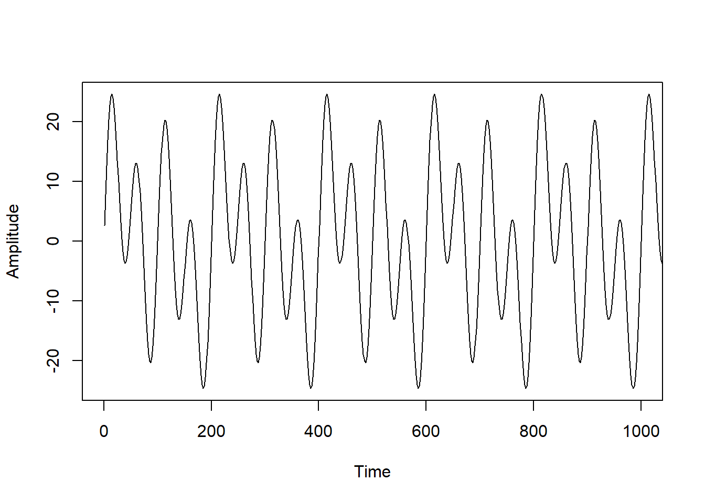
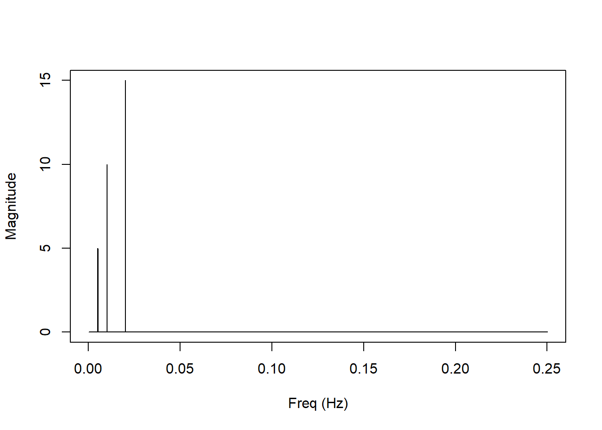
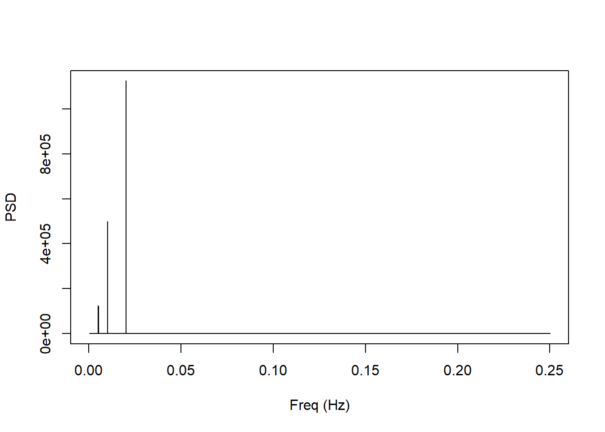
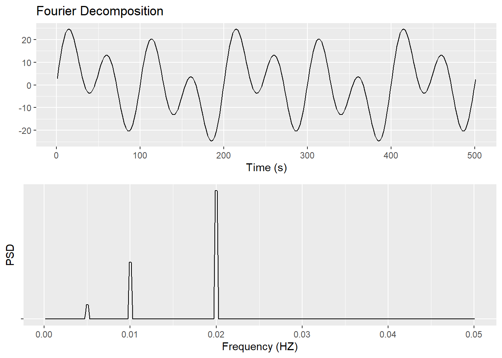

The Basics of Fourier Transforms
Chris Hering
1/7/2020
This is a test :o
and this is test text
Begin with a combination of sine waves going from t = 0 to 10,000 seconds, sampled at a 0.5 Hz.
t2 <- seq(1, 10000, by=2)
x2 <- (10*(sin(2*pi*t2*f1)) + 5*sin(2*pi*t2*f2) + 15*sin(2*pi*t2*f3))
plot(t2,x2, type="l", xlim=c(0,1000), xlab='Time', ylab='Amplitude')
The above waveform is composed of 3 distinct sine waves occuring at specified frequencies. Viewed in the time domain, it looks periodic, but is difficult to interpret. Decomposing the signal in the frequency domain can give us more-useful information.
Fourier Transforms
Fourier transforms produce information about the frequencies contained in a signal. Actually, they try to regress the time signal with a combination of sine and cosine waves, ie recreate the original signal using sine functions.
Because real world time signals will always be sampled at some frequency, and will be aperiodic, these transforms are implemented using discrete-time fourier transform algorithms. The most common of these is the fast fourier transform (FFT).
Below, we run the time domain signal through a FFT algorithm.
fft2 <- fft(x2)
head(fft2)## [1] -2.069100e-11+0.000000e+00i -8.168865e-12-9.157684e-12i
## [3] -7.837939e-12+1.282761e-12i -7.743746e-12-1.224481e-11i
## [5] -5.420746e-12-1.051039e-11i 8.456100e-12+2.929933e-12iThe output of this (as well as most) FFT algorithm is complex. This makes sense, as it is a concise way to represent information about a large number of sine waves.
The head() function in R displayed only the first 6 values of the FFT vector. In fact, there are (Duration of time signal)*(Sampling frequency) = 5000 values in the FFT output vector:
length(fft2)## [1] 5000all.equal(length(fft2), tail(t2, n=1)*fs2, length(x2))## [1] TRUEThis raw output of 5000 values is not very useful by itself. We take the real part of every complex vector and graph it along an index:

A few notes:
- There are 6 peaks apparently symmetric about the y axis
- The x axis has been labeled as “bins”
- The magnitudes of each peak are large
Currently, the y axis is off by a factor of 1/N and requires scaling if any information about the amplitudes of the underlying oscillations is desired. This is a consequence of the implementation of the FFT algorithm. Unfortunately, there is not yet a standard for its (FFT or IFFT) implementation, so you will have to check whether or not the software you’re using does this automatically.
Additionally, it is not yet obvious what the x axis is. Again, this is concomitant with the implementation of the FFT algorithm. Because computers can only handle discrete-time implementations of Foureir Transforms, only certain frequencies can be checked. To convert the indices to frequency values, you scale them by (sampling frequency)/N
Finally, because we are usually working with data sets gathered from physical processes, we only care about the first half of the above spectrum; the second contains information about “negative frequencies” and will be symmetric for data gathered from real processes. Double the first half of the spectrum and discard the second half.
Rescaling the Axes
One of the trickiest parts of making a magnitude spectrum is just understanding the FFT output and knowing how to scale it. The following lines scale the magnitude and frequency axes as described above and produce a much more intuitive plot:
#Remove all after the nyquist frequency (first half of the bins):
fft2.x <- fft2.x[1:2501]*fs2/length(fft2) #Convert bins to frequencies
fft2.y <- fft2.y[1:2501]/(length(fft2)/2) #Scale magnitudes
plot(fft2.x, fft2.y, xlab='Freq (Hz)', ylab='Magnitude', type="l") 
Finally we have a spectrum displying useful information. 3 distinct oscillations made up the original time signal: a 5 amplitude sine wave oscillating at .005 Hz, a 10 amplitude sine wave oscillating at .01 Hz, and a 15 amplitude wave oscillating at .02 Hz. Getting the period of each wave and thinking about that value in the context of where the original data came from can yeild new insights.
However, magnitude is not usually the parameter of concern. Instead, a power spectrum or a power spectral density graph is created Sometimes the two terms are erroneously used interchangeably.
A power spectrum is just the magnitude squared and then divided by two. This is to account for the half of the spectrum which was discarded.
plot(fft2.x, fft2.y**2/2, xlab='Freq (Hz)', ylab='Power',
type="l", xlim=c(00,.05)) 
Such a spectrum has an interesting property: the power of a frequency is approximately the contribution of that frequency to the total variance of the time signal. This holds true if we remember to account for the side of the spectrum which we threw away; otherwise, an inverse fourier transform of this data would leave us with a diminished version of our original time series. But honestly, the power spectrum doesn’t look very different from the magnitude spectrum.
Possibly the most commonly analyzed frequency spectrum is the power spectral density (PSD). It is calculated by taking the fourier transform of the autocorrelation funcion of a stochastic time series signal. However, it can be estimated by dividing the power spectrum (derived from a periodogram) by the effective noise bandwidth. In this case, where “no” windowing was used, that will just be the length (duration) of the time series. The area under a PSD curve will always sum to 1. So, if you increase your sampling frequency, a given PSD peak will grow taller, so that the area under that peak remains the same.
The PSD is shown below:
plot(fft2.x, (fft2.y)**2*(ts2*length(t2)/2), xlab='Freq (Hz)', #(Pow)*ts*L
ylab='PSD', type="l") 
What Now
This analysis is useful for quickly determining whether or not there are periodic trends in your data set. This is most useful when you have a group of parameters oscillating, as you can find out which frequencies are present and which ones are the strongest. The fourier analysis outputs also contain information about the phase of each wave, so cross spectral densities and coherences could be estimated as well. But it will usually be simpler and quicker to visually inspect the data to determine which waves occur first.
Finally, there are a few issues to consider when decomposing real world time series. The most important of these will be deciding how much data to use, determining if your sampling rate is sufficient, and evaluating the stationarity of your time series signal. Because periodograms are inconsistent estimators of spectral density, using more data will give you a noiser result. Other methods must be used if more-precise spectra are desired.
